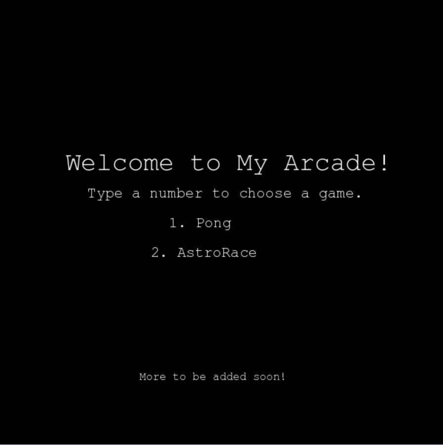
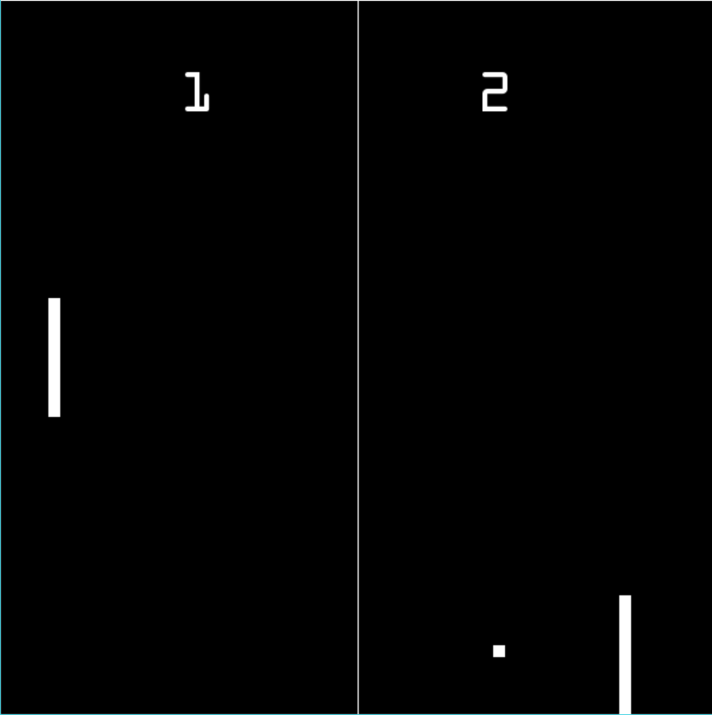
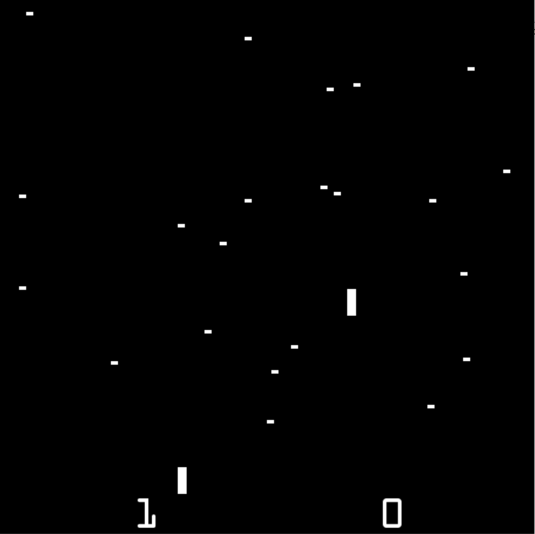

Pygame Arcade is a project I worked on in Python, early on in my career as a computer science student. Using the pygame module, I've been worked on an "arcade" of games, based on retro video games. I ended up making two games based on Pong and AstroRace, but I may still work on more in the future.
|  |  |  |
|---|
A project I began in the spring and am currently working on, allowing me to experiment with JavaScript and JQuery. It's a web application that takes in weather data for a given city and informs a user what they should wear, such as the title suggests, a jacket. Weather data is currently backed by the OpenWeatherMap API.
As a project for one of my classes, I recreated a miniature Gameboy Advance version of the NES game, Bubble Bobble, in C. The game features two levels. Short video of gameplay shown below.
Feel free to check out my github to check out what else I may be working on!